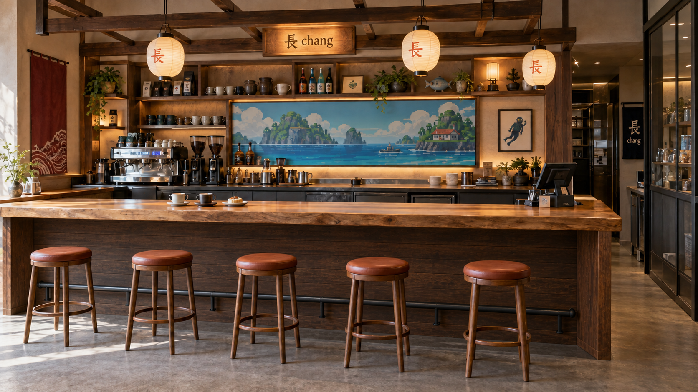
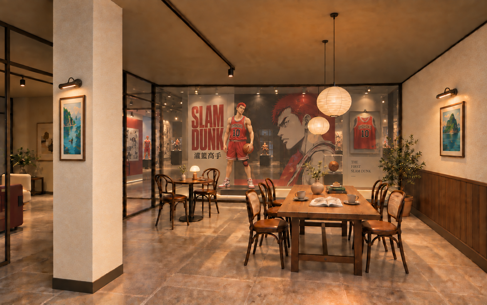
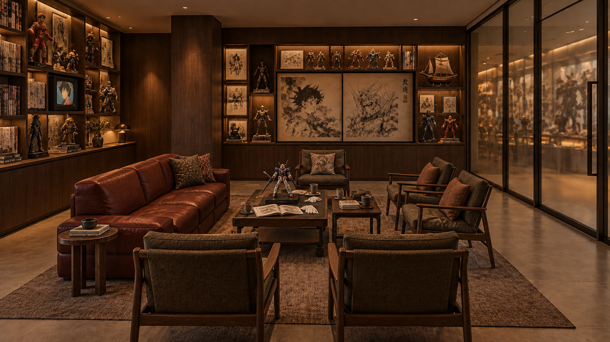
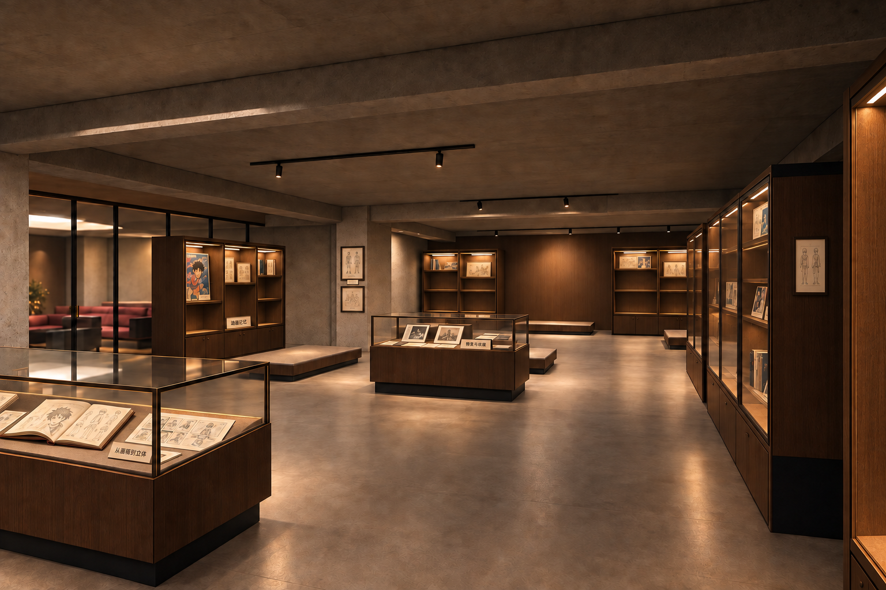
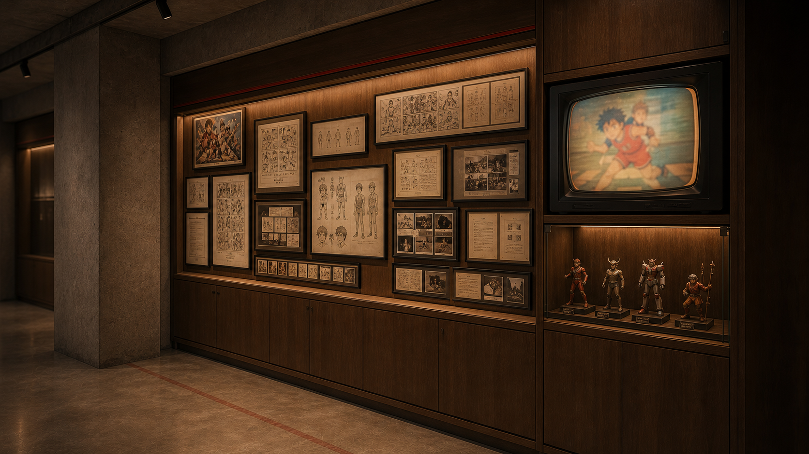
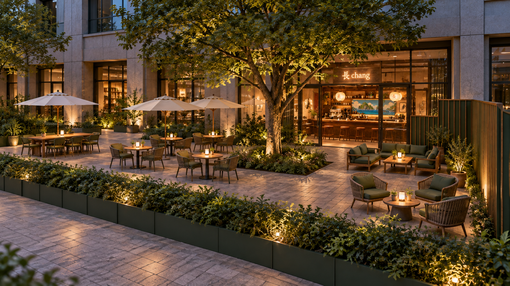

空间效果图集
咖啡与收藏，在这里相遇。
收录本轮采用的 5 张室内原图，以及 1 张待确认户外方案。图片保留完整比例；点击可查看原尺寸。
效果图表达设计氛围；全景中的侧后方补景不纳入认可原图。
01已认可风格 · 恢复原位
咖啡吧台
饮品出品与面对面交流

这里是咖啡厅的出品中心，也是进店后最直接的交流位置。厚木台面、纸灯和像素海景延续你认可的“潜水员戴夫”氛围。
这里做什么
咖啡与饮品制作、点单取餐；外采甜点在店内简单装盘。吧位用于一人小坐和与主理人交流。
怎样使用
客人坐在前吧看出品，工作人员在内侧完成制作、洗消与收纳。夜间的鸡尾酒交流可沿用这处社交界面，设备另行深化。
与其他空间的关系
吧台恢复在原左侧，与门前外摆及室内桌椅区共同服务；通过沙龙联系展厅，咖啡侧不另开直达展厅门。
图中五个吧位为原图表达；具体座位数量、设备及尺寸以恢复后的平面深化为准。
进入咖啡吧台全景 ↗
02认可方向 · V8现行深化
咖啡桌椅与主题展示窗
一边喝咖啡，一边看当期收藏

长桌与双人桌承接饮咖、阅读和小组交流。正面的大幅玻璃把当期主题带到咖啡厅，后方仍能看到大展厅中较远的藏品。
这里做什么
日常喝咖啡、吃甜点、阅读与聊天；也让暂不进入展厅的客人欣赏当期主题和等身雕像。
怎样使用
灌篮高手、海贼王、钢铁侠等主题可定期轮换。布景与等身雕像按既定方向配置移动台，方便从展厅侧换展。
与其他空间的关系
展示窗属于视觉联系，咖啡侧不设通行门。承重柱完整保留；右侧用暖色实体墙，与木质吧台保持连续氛围。
沿用两尊樱木与后方藏品纵深的V8方向；实际姿态、底座和摆位仍需对应实物。
进入咖啡桌椅与主题展示窗全景 ↗
03本轮指定采用 · SAL2
沙龙 · 收藏者客厅
藏友会面、赏玩与小型分享

沙龙围绕收藏和交流展开。皮沙发、轻巧单椅、画册与模型共同组成一个可坐下来慢慢看的客厅，延续展厅的私人收藏气质。
这里做什么
藏友会客、画册阅读、小比例模型赏玩，以及围绕某个作品、角色或制作过程的小型分享会。
怎样使用
日常按约8席客厅摆法使用。分享会时移动沙发和小桌、补充活动椅，可切换为12–16人方案，人数包含主讲。
与其他空间的关系
位于咖啡与展厅之间，既是参观前后的停留点，也是受邀交流空间。玻璃保留与邻区的视线联系。
12–16人为切换家具后的提案，非本张效果图现成座位数；中央赏玩桌不承担打磨、喷漆或大型雕像搬运。
进入沙龙 · 收藏者客厅全景 ↗
04本轮指定采用 · 文化R2
私人收藏展厅
从藏品本身，看到作品与收藏背景

这里承担主要收藏展示与参观。沿墙展柜、中央低岛和可移动展台共同组织视线，让模型、书册与图文资料形成完整的观看内容。
这里做什么
承接超级英雄、东方仙侠、热血日漫、机甲高达等收藏方向；结合藏品介绍、造型细节和个人收藏记录进行讲解。
怎样使用
沿墙展柜用于分系列陈列，低岛用于画册和纸本资料；等身雕像使用独立移动台，便于调换位置并与主题窗轮展配合。
与其他空间的关系
与沙龙相连，并保留展厅独立入口的总体要求。咖啡客人透过主题窗观看，正式参观经沙龙或展厅入口进入。
本版移动台和部分柜架留空，实物藏品尚未全部回填；左侧玻璃后的旧沙龙背景以最新SAL2页为准。
进入展厅全景 ↗
05已认可 · 文化氛围参考
私人收藏档案墙
给藏品一段可以读懂的介绍

这面墙把“为什么收藏、作品讲什么、造型如何形成”变成可阅读的内容。图框、书页、小比例手办和复古屏幕构成你认可的文化氛围。
这里做什么
介绍作品与角色背景、版本与比例、造型资料和个人收藏故事，让来访者不仅看到模型，也理解其来历和看点。
怎样使用
一组图稿配少量实物与对应说明；小屏播放相关影像。内容可以随主题轮换，下柜收纳替换资料和展示用品。
与其他空间的关系
作为展厅文化内容的细节参考，不单独算一个房间；具体落在哪面墙、墙长和柜体尺度，按现行展厅平面落实。
图中画稿、影像和小字为陈列示意，后续用实际收藏资料替换；此页是认可参考，不作为已定位施工立面。
进入展厅全景 ↗
A1附录待确认
户外咖啡庭院
附录 · 树下外摆与休闲停留

外摆承担更轻松的饮咖、休息和交谈。树下桌椅、遮阳伞、低矮绿植与暖光围合出庭院感，与室内木质吧台相呼应。
这里做什么
户外饮品与甜点服务、朋友小聚、等待和短暂停留，分担室内咖啡厅的座位需求。
怎样使用
组合小圆桌、多人桌和休闲座位，保留送餐与返回入口的路径；景观和照明服务日间、傍晚两种使用状态。
与其他空间的关系
约200㎡外摆朝高科路／园区次入口一侧，按既定方向向左延伸；右侧设置遮挡，阻止客人进入展厅外侧区域。
本图仍待确认。树位、地形、地坪、外摆边界、家具容量及右侧遮挡做法需结合现场复核。
进入户外咖啡庭院全景 ↗